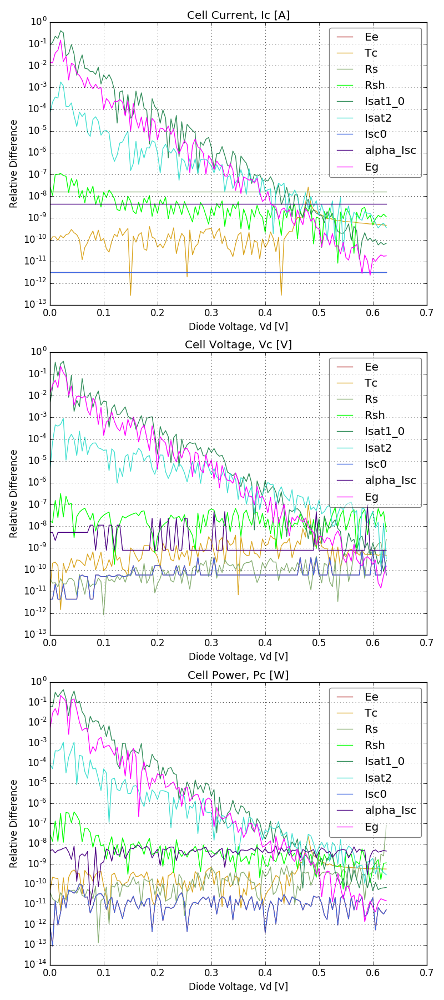

Complex Example¶
A more complex example from the test_uncertainty_wrapper
module called test_IV(),
includes combinations of several exponential and power operations. It contains
9 input arguments, there 126 observations of each corresponding to different
voltages and there are 3 return values. The calculated uncertainty using a 1%
standard deviation (square root of variance) for all 9 inputs is shown below.
The test compares the derivatives calculated using central finite difference approximation with an analytical calculation from 0.3[V] to 0.6[V]. Below 0.3[V] the approximations deviate from the analytical for \(\frac{\partial I_{sc}}{\partial I_{sat_{1,0}}}\), \(\frac{\partial I_{sc}}{\partial I_{sat_2}}\) and \(\frac{\partial I_{sc}}{\partial E_g}\) while all other independent variables are consistently below 10e-7. The analytical derivatives are propagated using AlgoPy, an automatic differentiation package, which requires rewriting all NumPy operations like \(exp\) using AlgoPy. This makes it impractical for use in most models, but still useful for testing.
